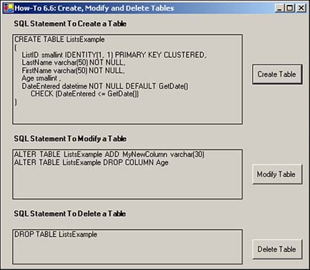

It is common in database applications to programmatically create, modify, and delete tables. How do I do this using T-SQL?
To perform these tasks, you will use the CREATE TABLE, ALTER TABLE, and DROP TABLE T-SQL statements. With these statements, you can handle any requirements that your application might have. Look at these statements one at a time.
With the CREATE TABLE statement, not only can you specify columns and their data types, but you also can specify indexes, check constraints, and other table level properties. For this How-To, you will be use the following T-SQL statement:
CREATE TABLE ListsExample
(
ListID smallint IDENTITY(1, 1) PRIMARY KEY CLUSTERED,
LastName varchar(50) NOT NULL,
FirstName varchar(50) NOT NULL,
Age smallint ,
DateEntered datetime NOT NULL DEFAULT GetDate()
CHECK (DateEntered <= GetDate())
)
This statement shows how to perform a number of different tasks:
Specify the name of the table:
CREATE TABLE ListsExample
Create an Identity column, which is the primary key:
ListID smallint IDENTITY(1, 1) PRIMARY KEY CLUSTERED,
Create fields that can't be NULL, and using different data types:
LastName varchar(50) NOT NULL, FirstName varchar(50) NOT NULL, Age smallint ,
Create a field with the Default Value set, and with a Check Constraint specified.
DateEntered datetime NOT NULL DEFAULT GetDate()
CHECK (DateEntered <= GetDate())
The example T-SQL statement used for modifying the table in this How-To is pretty simple in that it adds a column and removes (drops) a column:
ALTER TABLE ListsExample ADD MyNewColumn varchar(30) ALTER TABLE ListsExample DROP COLUMN Age
You can perform quite a few other tasks with this statement. You can even see by the syntax displayed here that you can handle many tasks, including dropping constraints.
ALTER TABLE table { [ ALTER COLUMN column_name { new_data_type [ ( precision [ , scale ] ) ] [ COLLATE < collation_name > ] [ NULL | NOT NULL ] | {ADD | DROP } ROWGUIDCOL } ] | ADD { [ < column_definition > ] | column_name AS computed_column_expression } [ ,...n ] | [ WITH CHECK | WITH NOCHECK ] ADD { < table_constraint > } [ ,...n ] | DROP { [ CONSTRAINT ] constraint_name | COLUMN column } [ ,...n ] | { CHECK | NOCHECK } CONSTRAINT { ALL | constraint_name [ ,...n ] } | { ENABLE | DISABLE } TRIGGER { ALL | trigger_name [ ,...n ] } }
You can do even more. Look at the Books Online for SQL Server to see complete coverage of this statement.
This statement is the easiest, and it's a one liner:
DROP TABLE ListsExample
However, you need to keep some things in mind when you are trying to drop a table:
You can't use the DROP TABLE statement when the table is used in a relationship and is referenced in the FOREIGN KEY constraint. You will need to drop the other table or the constraint.
You will need to be the administrator or owner of the table to be able to use the DROP TABLE statement.
You can't use the DROP TABLE statement on system tables.
Open and run the Visual Basic .NET-Chapter 6 solution. From the main form, click on the button with the caption How-To 6.6 (see Figure 6.7).
Create a Windows Form. Then place the controls listed in Table 6.6 with the following properties set, as displayed in Figures 6.7.
|
Object |
Property |
Setting |
|---|---|---|
|
Label |
Text |
SQL Statement to Create a Table |
|
Label |
Name |
lblCreateTable |
|
Button |
Name |
btnCreateTable |
|
Text |
Create Table |
|
|
Label |
Text |
SQL Statement to Modify a Table |
|
Label |
Name |
lblModifyTable |
|
Button |
Name |
btnModifyTable |
|
Text |
Modify Table |
|
|
Label |
Text |
SQL Statement to Delete a Table |
|
Label |
Name |
lblDeleteTable |
|
Button |
Name |
btnDeleteTable |
|
Text |
Delete Table |
Add the code in Listing 6.11 to the Load event of the form. (Double-click on the form to bring up the code.) This routine creates the SQL statements for all three tasks and assigns them to the appropriate label for display.
Private Sub frmHowTo6_6_Load(ByVal sender As System.Object,
ByVal e As System.EventArgs) Handles MyBase.Load
'-- Build the SQL String for Creating a Table
Dim strSQL As String
strSQL = "CREATE TABLE ListsExample" & vbCrLf
strSQL &= "(" & vbCrLf
strSQL &= " ListID smallint IDENTITY(1, 1) " & _
"PRIMARY KEY CLUSTERED," & vbCrLf
strSQL &= " LastName varchar(50) NOT NULL, " & vbCrLf
strSQL &= " FirstName varchar(50) NOT NULL, " & vbCrLf
strSQL &= " Age smallint , " & vbCrLf
strSQL &= " DateEntered datetime NOT NULL DEFAULT GetDate() " & vbCrLf
strSQL &= " CHECK (DateEntered <= GetDate())" & vbCrLf
strSQL &= ")"
Me.lblCreateTable.Text = strSQL
strSQL = "ALTER TABLE ListsExample ADD MyNewColumn varchar(30) " & vbCrLf
strSQL &= "ALTER TABLE ListsExample DROP COLUMN Age"
Me.lblModifyTable.Text = strSQL
strSQL = "DROP TABLE ListsExample"
Me.lblDeleteTable.Text = strSQL
End Sub
Add the code in Listing 6.12 to the Click event of the btnCreateTable button. This routine calls the function PerformTask(), passing the text in the lblCreateTable label. PerformTask() is described in the next step. If you perform the task successfully, then a message box is displayed letting you know that all went as it should have.
Private Sub btnCreateTable_Click(ByVal sender As System.Object, _
ByVal e As System.EventArgs) Handles btnCreateTable.Click
If PerformTask(Me.lblCreateTable.Text) Then
MessageBox.Show("Table Created Successfully, " & _
_Look for ListsExample " &
"Table in Northwind Database in Server Explorer", _
"Action Performed")
End If
End Sub
In the class module of the form created for this How-To, create the code displayed in Listing 6.13 for the PerformTask() function. This code creates a Connection object. Next, create a Command object that is based on the string passed in strSQL. Open the connection and execute the command. Notice that the execution of the command has been wrapped in the Try..Catch..End Try code block to make sure the command is executed correctly; if it's not, a message is displayed.
Function PerformTask(ByVal strSQL As String) As Boolean
Dim cnn As New OleDb.OleDbConnection(BuildCnnStr("(local)", "Northwind"))
Dim cmdAction As New OleDb.OleDbCommand(strSQL)
cmdAction.Connection = cnn
cnn.Open()
PerformTask = True
Try
cmdAction.ExecuteNonQuery()
Catch excp As Exception
MessageBox.Show(excp.Message, "Error with Action")
PerformTask = False
End Try
cnn.Close()
End Function
Add the code snippets in Listing 6.14 to the appropriate Click events for btnModifyTable and btnDeleteTable to the Load event of the form.
Private Sub btnModifyTable_Click(ByVal sender As System.Object,
ByVal e As System.EventArgs) Handles btnModifyTable.Click
If PerformTask(Me.lblModifyTable.Text) Then
MessageBox.Show("Table Modified Successfully, " & _
Look for ListsExample " &
"Table in Northwind Database in Server Explorer", _
"Action Performed")
End If
End Sub
Private Sub btnDeleteTable_Click(ByVal sender As System.Object, _
ByVal e As System.EventArgs) Handles btnDeleteTable.Click
If PerformTask(Me.lblDeleteTable.Text) Then
MessageBox.Show("Table Deleted Successfully, " & _
"Look for ListsExample " &
"Table in Northwind Database in Server Explorer", _
"Action Performed")
End If
End Sub

You don't have to add, modify, and delete tables manually. Just make sure that you back up your data before performing these tasks.